PEOPLE
Lab Manager
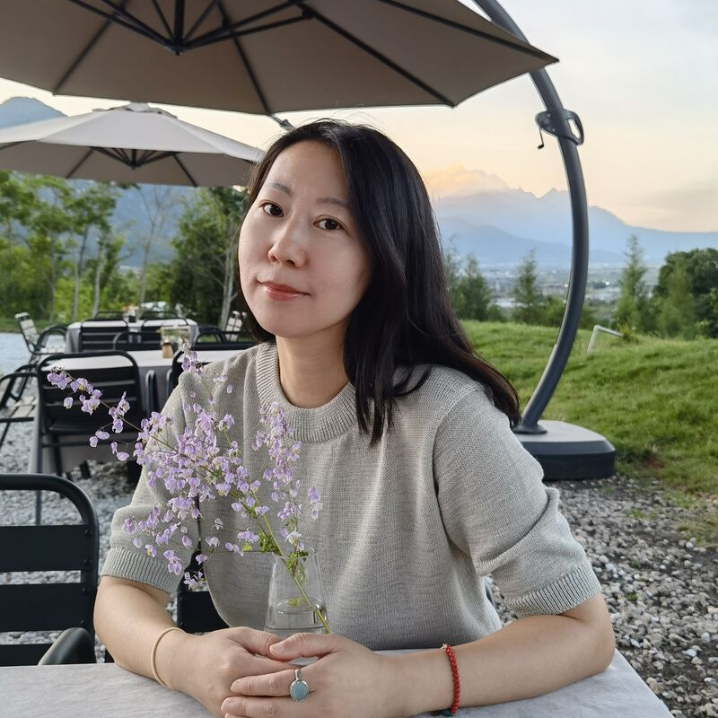
Wei Song (宋溦)
Lab manager
Faculty

Ao Aoli (奥利奥)
Visiter

Xiang Xiang (香香)
Visiter
PhD Student

Lulu Huang (黄露露)
PhD student

Xiaoyang Liu (刘潇阳)
PhD student

Zihong Kang (康自红)
PhD student

Tianyu Wang (王天雨)
PhD student

Weide Xiao (肖维德)
PhD student

Lishan Yu (俞黎姗)
PhD student
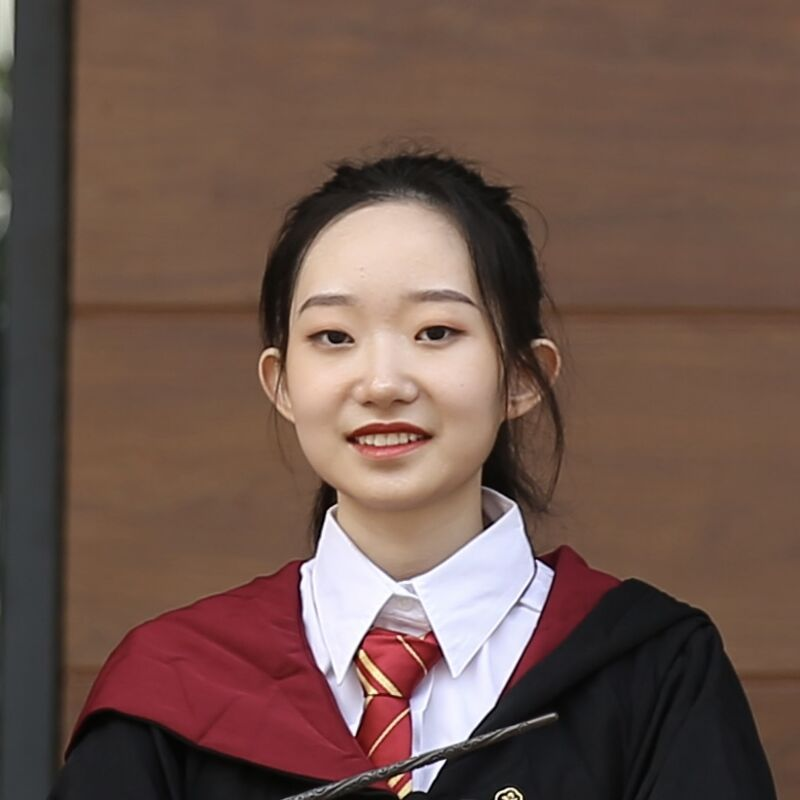
Xinyu Liu (刘欣宇)
PhD student
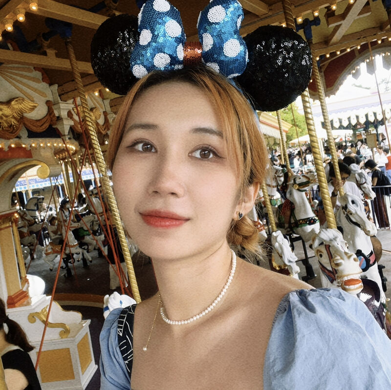
Xinning Zhang (张薪泞)
PhD student
情绪稳定的成年人
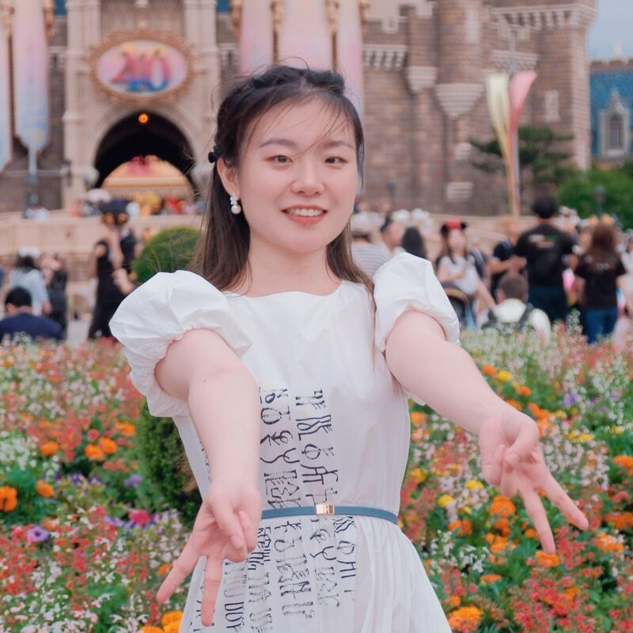
Yifan Zhang (张艺凡)
PhD student
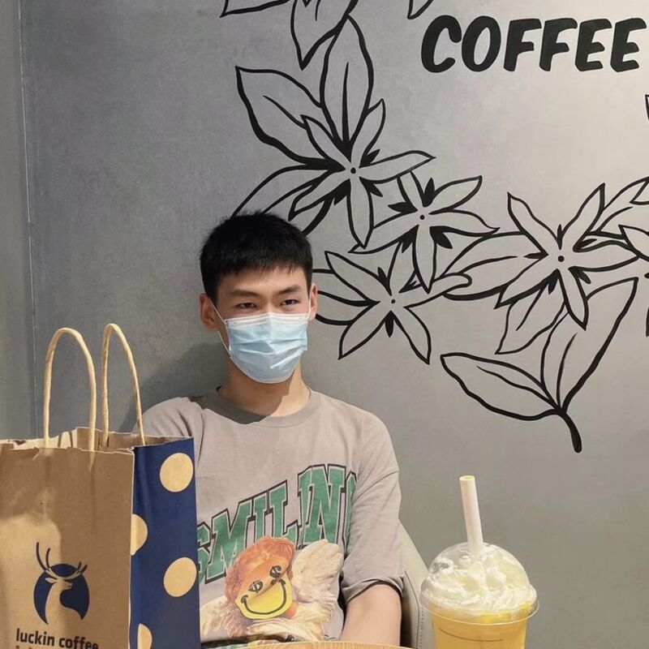
Qidong Deng (邓启东)
PhD student

Zhangxian Zhou (周章娴)
PhD student

Li Tang (汤蠡)
PhD student
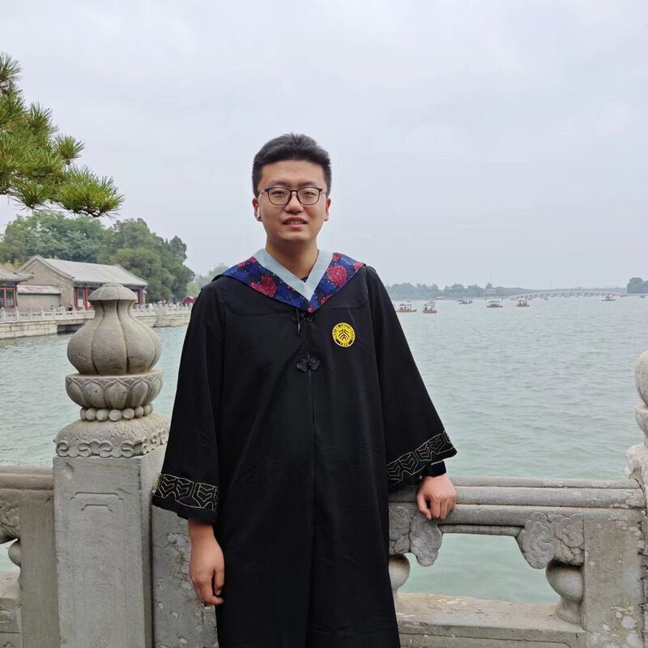
Yachao Bai (白雅超)
PhD student
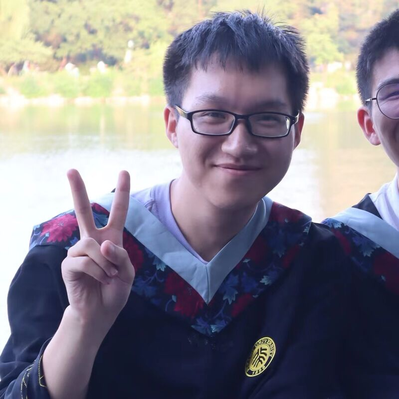
Yihai Zhang (张益海)
Rotation student

Yu Wang (王瑜)
Rotation student

Lingxiang Chen (陈凌翔)
Rotation student
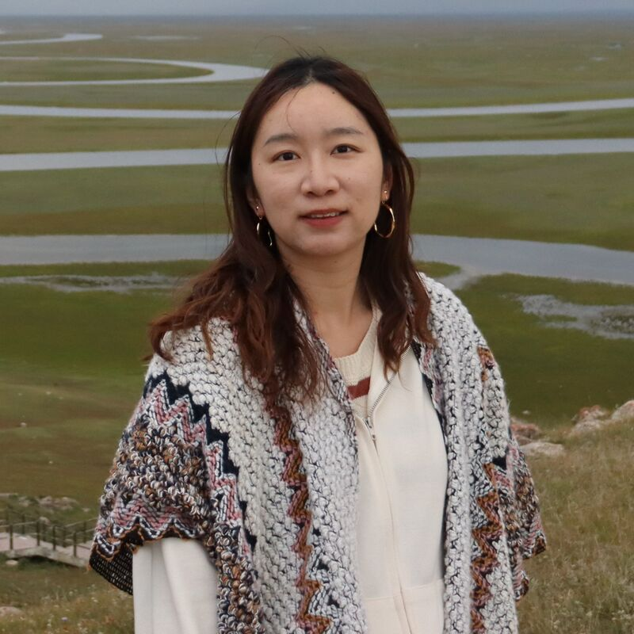
Tianxin Chen (陈天欣)
Rotation student
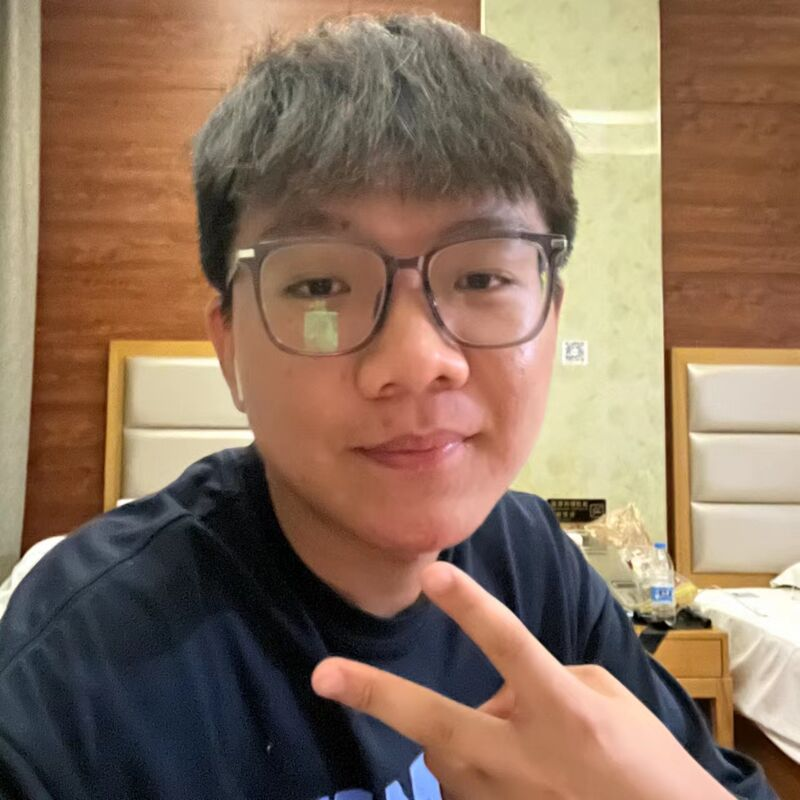
Kaiyuan Jia (贾开源)
Rotation student
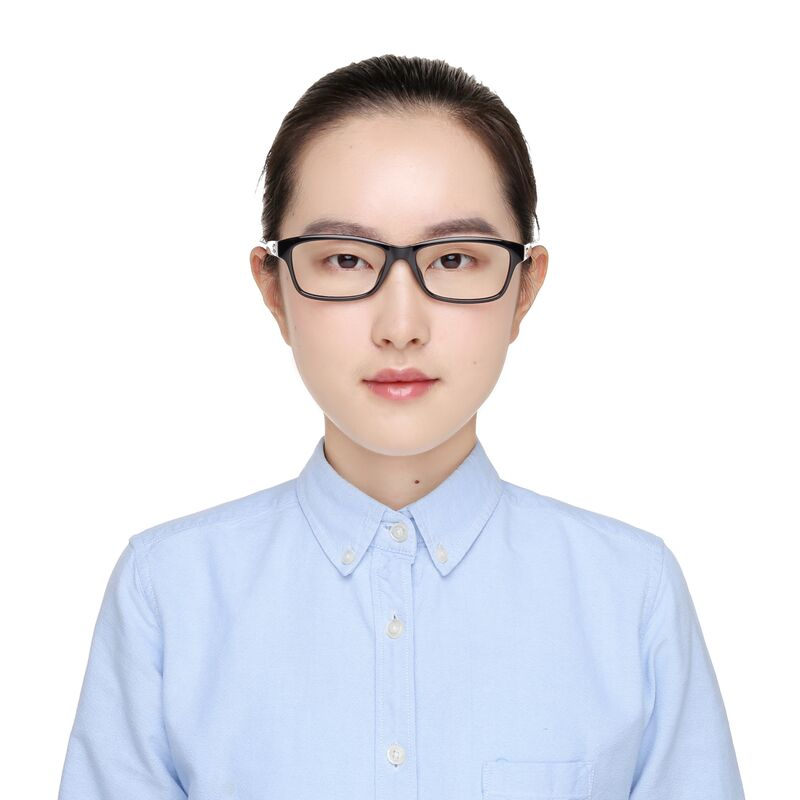
Zhangyi Lai (来章怡)
Rotation student
Technician

Xuanhao Zhu (朱选昊)
Technician
Untergraduate Student
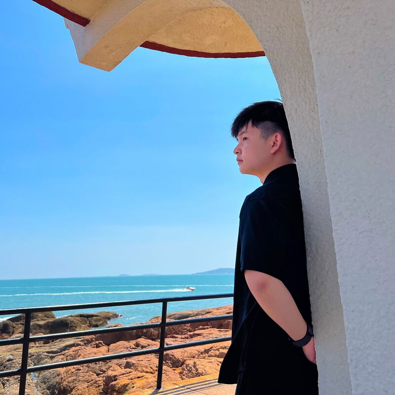
Yunfan Xiang (向云帆)
Undergraduate student
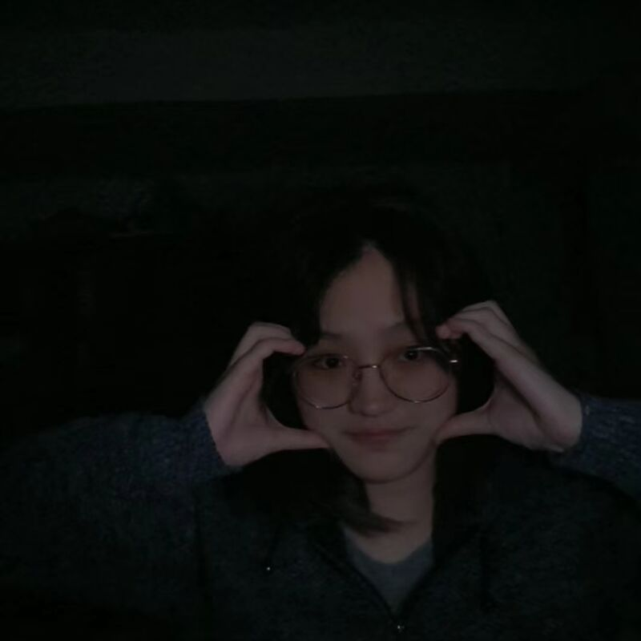
Shiyao Zhu (朱诗尧)
Undergraduate student
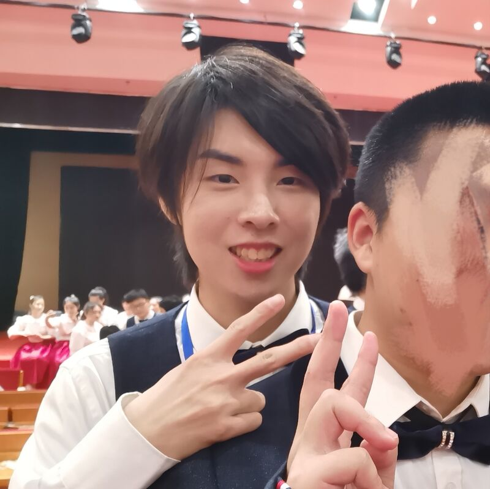
Haoxuan Dong (董浩轩)
Undergraduate student
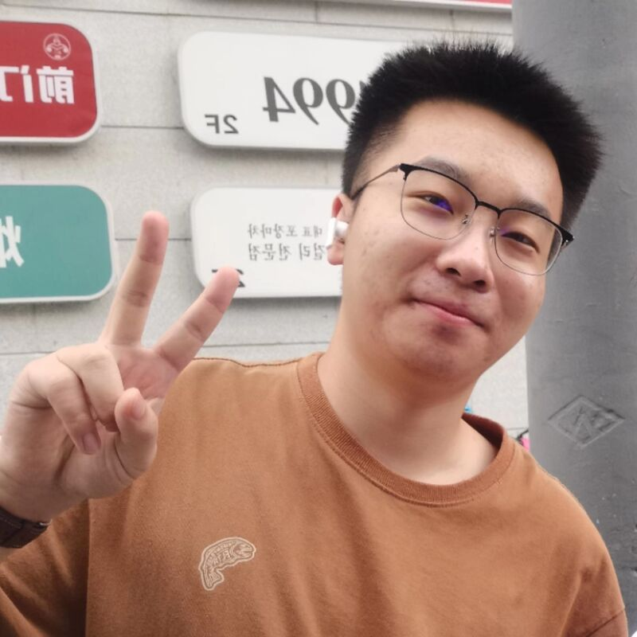
Yuhang Qiu (邱宇航)
Undergraduate student
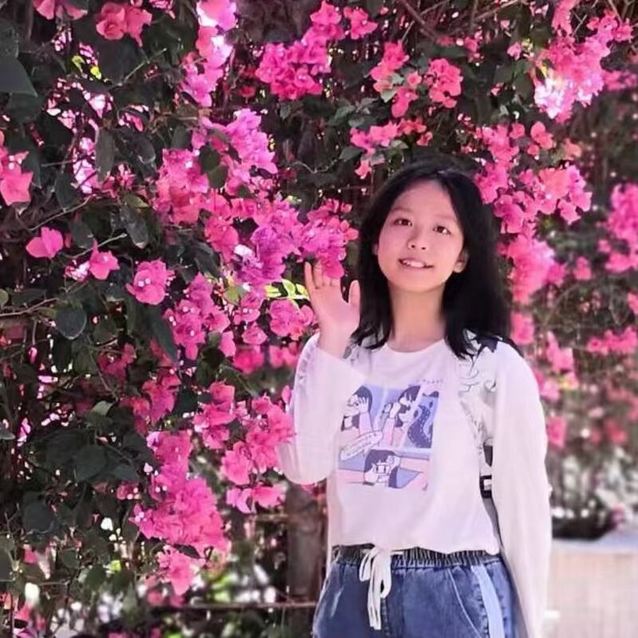
Yue Yang (杨悦)
Undergraduate student

Yuchen Zhang (张羽辰)
Undergraduate student

Yijian Zhou (周义简)
Undergraduate student
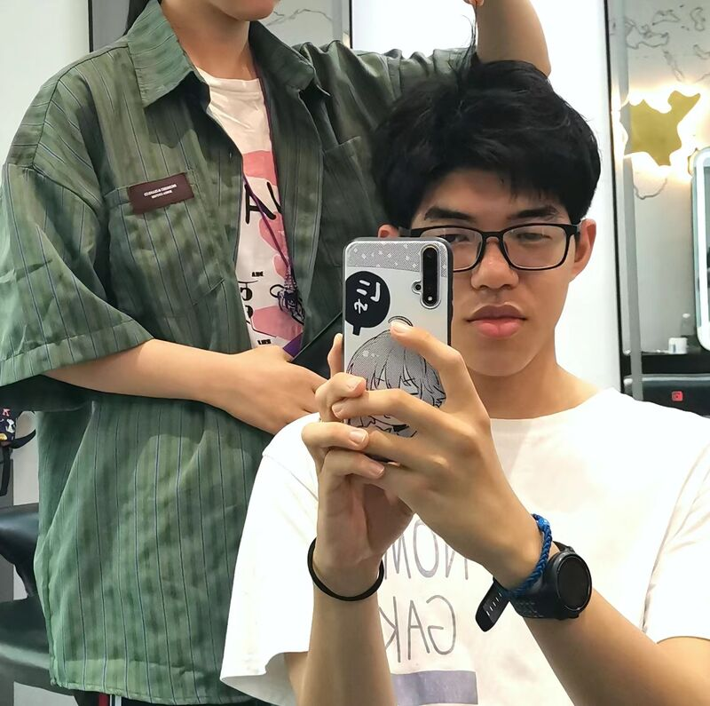
Lida Sun (孙理达)
Undergraduate student
Alumni
...